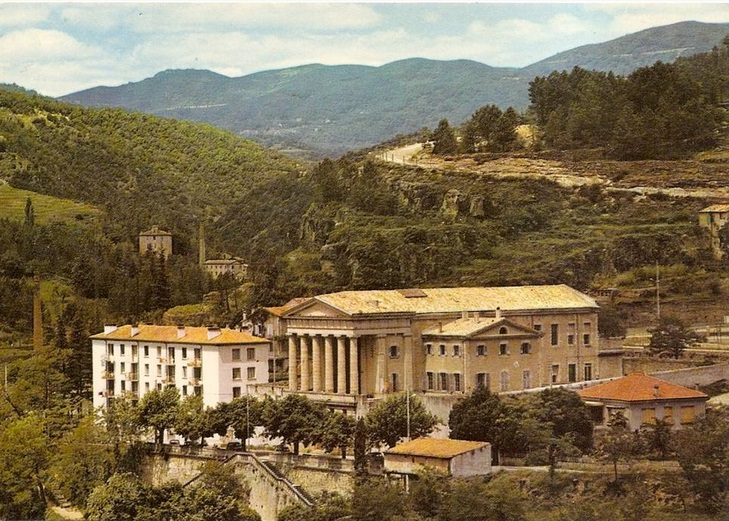
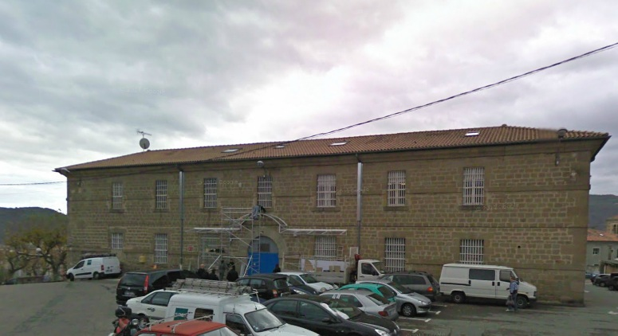
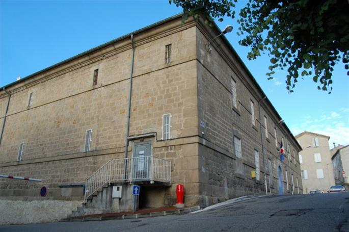
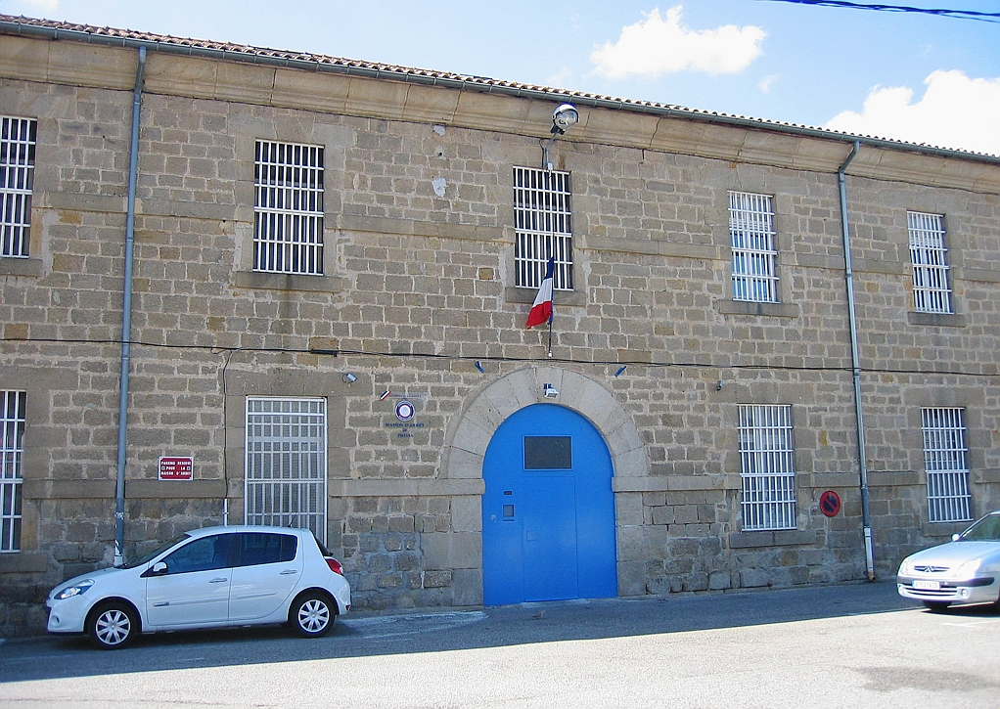
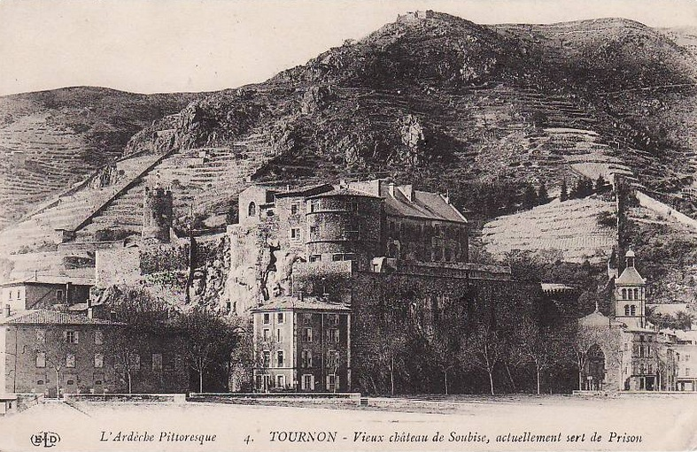

| Département | Images | Ville | Nom | Adresse | Période | Capacité | Histoire du lieu | Nombre d'exécutions |
| Ardèche (07) |  |
Largentière | Maison d'arrêt | "Fourniol" | 1847-1926 | Partie arrière du palais de justice, construit pour remplacer les anciens tribunaux et prisons situés jusqu'alors dans le château, le bâtiment judiciaire, de style néo grec, domine la ville. Comme beaucoup d'établissements de sous-préfecture, la prison connaît une réouverture : en septembre 1939, on y enferme tous les Allemands et Autrichiens demeurant dans la Drôme et en Ardèche avant de les transférer au camp des Milles, dans les Bouches-du-Rhône : parmi eux, le peintre Max Ernst, demeurant à Saint-Martin-d'Ardèche, et qui sera libéré le 23 décembre de la même année. En 1942, ce sont les meurtriers de René "Marx" Dormois qui y seront incarcérés, et libérés par les Allemands en janvier 1943. Le palais de justice, désaffecté en 2009, sert désormais de salle des fêtes et d'exposition. | Aucune exécution | |
| Ardèche (07) |    |
Privas | Maison d'arrêt, de justice et de correction | 1, place des Récollets | En service depuis 1820 | 39 places (1962) 62 places (2015) |
Construite en 1818, la prison de Privas reste la plus petite maison d'arrêt de la région Rhône-Alpes. En 1991, suite à son délabrement, détenus et gardiens s'associent pour réaliser la majeure partie des travaux et refaire de la maison d'arrêt un lieu viable. En 2010, sa fermeture semblait programmée dans un délai de 5 ans, mais l'année suivante, cette décision est annulée. C'est également au pied de cette prison qu'en 1975, Bertrand Tavernier tourne "Le juge et l'assassin", adaptation des crimes du tueur en série Joseph Vacher. | Trois exécutions en 1923, 1928 et 1948. |
| Ardèche (07) |  |
Tournon-sur-Rhône | Maison d'arrêt du Château | 14, place Auguste Fauré | 1809-1926 | En plein centre-ville, dominant la cité et le Rhône, l'ancien Château des seigneurs de Tournon est un bâtiment vieux de près d'un millénaire - même si les éléments principaux encore debout remontent, eux, au XIVe siècle. Ayant eu l'honneur d'accueillir trois rois de France sur le chemin de la guerre (Louis IX vers les Croisades, François 1er et Henri II vers l'Italie), il compta également parmi ses pages le futur poète Pierre de Ronsard. Devenu prison après la mort du dernier maître des lieux, le château garde ce rôle pénitentiaire - après quelques aménagements - pendant un peu plus d'un siècle. Classé monument historique à trois reprises en 1927, en 1938 et en 1960, il est devenu Musée du Rhône moins de deux ans après sa désaffection, rôle toujours d'actualité. | Aucune exécution |
{kind=link}
{kind=link}
{kind=link}
{kind=link}
{kind=link}